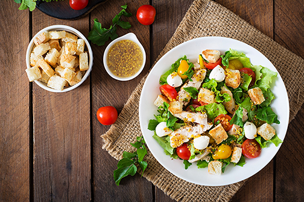
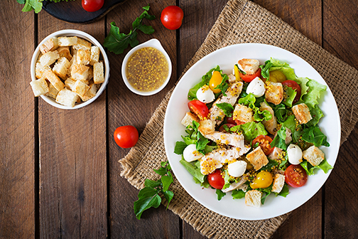

(602) 789-5672
.
Reservation's
First Name
Last Name
Time
Date
.
Rucker’s Resturant is open seven days a week from 11 AM to 10 PM Monday through Saturday and 12 PM through 8 PM on Sunday.
(602)789-5672

 

Rucker's Resturant.
The best steak in Scottsdale!
555 Mountainview Ave. Scottsdale, AZ 85260 (602) 789-5672
.
Welcome to Rucker’s, which has been voted Best Steakhouse in Scottsdale four years running! At Rucker’s you can enjoy a quality steak, amazing wine, and a quiet atmosphere in a mountain-themed restaurant. Rucker’s has been a tradition in Scottsdale since 1975 and is an amazing place to dine.